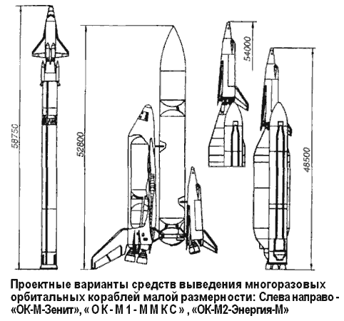

Проект «МАКС»
На основе научно-технического опыта по созданию орбитального корабля «Буран» в НПО «Энергия» по указанию главного конструктора Юрия Семенова и под руководством Павла Цыбина в период с 1984 по 1993 год были развернуты проектно-конструкторские работы по совершенствованию ракетно-космических комплексов.
Приоритет отдавался решению задач транспортно-технического обслуживания и повышения эксплуатационной эффективности орбитальных станций типа «Мир», замены серии одноразовых кораблей типа «Союз» и «Прогресс» и применения средств выведения как с вертикальным, так и с горизонтальным стартом. Результатом этих разработок стало появление проектов многоразовых кораблей малой размерности «ОК-М»: «ОК-М», «ОК-М1» и «ОК-М2» с начальными массами от 15 до 32 тонн.
Аэродинамическая схема пилотируемого многоразового корабля «ОК-М» (начальная масса 15 тонн) аналогична аэродинамической схеме корабля «Буран». Его основные конструктивные элементы: цельный неразрезной фюзеляж, включающий кабину экипажа и грузовой отсек пенального типа, крыло двойной стреловидности, снабженное элевонами; вертикальный стабилизатор с рулем направления; носовое и основное колесное шасси. Внешняя поверхность корабля «ОК-М» покрыта плиточным теплозащитным покрытием на основе материалов, разработанных для «Бурана». Носовой «кок» выполнен открывающимся, из материала углерод-углерод; под ним в носовой части фюзеляжа размещен стыковочный агрегат андрогинного типа. Двигательная установка, состоящая из 36 ЖРД на высококипящих компонентах и вытеснительной системы подачи топлива, размещается в двух мотогондолах хвостовой части фюзеляжа и в носовом «коке». Система управления корабля «ОК-М» реализовывалась на основе бортового вычислительного комплекса, применяемого на корабле «Союз ТМ».
Электропотребление корабля составляло в среднем 2,5 кВт и обеспечивалось системой электроснабжения, состоящей из 16 аккумуляторных батарей. Предусматривалась возможность использования солнечных батарей площадью до 25 м?.
Габариты «ОК-М»: длина — 15 метров, высота — 5,6 метра, размах крыла — 10 метров, объем отсека полезного груза — 20 м?, масса — 15 тонн, масса полезного груза — до 3,5 тонны, посадочная масса — 10,2 тонны.
Экипаж «ОК-М» — 2 человека, количество пассажиров, доставляемых на орбиту в специальном модуле, — 4 человека.
Носителем «ОК-М» должна была стать двухступенчатая ракета «Зенит» конструкции НПО «Энергия». Силовая связь корабля с ракетой-носителем осуществлялась через переходный отсек, выполненный по типу «монокок», на котором с помощью сбрасываемых пилонов размещались четыре твердотопливных ускорителя. Блок ускорителей (средняя тяга каждого составляла 25 тонн) позволял увеличить мощность ракеты в штатном полете и обеспечивал экстренное отделение и управляемый увод «ОК-М» при аварии.
Многоразовые орбитальные корабли «ОК-М1» и «ОК-М2» рассчитывались на начальную массу в 32 тонны. Планеры этих кораблей выполнены по схеме «летающее крыло» со складными консолями двойной стреловидности в плане, которые крепятся к средней части фюзеляжа. С учетом увеличенных габаритов кораблей была повышена тяга орбитальных двигательных установок, работающих на компонентах: жидкий кислород + керосин («ОК-М1») и жидкий кислород + этанол («ОК-М2»), до 60 кВт увеличена мощность системы электроснабжения.
Габариты «ОК-М1»: длина — 19,08 метра, высота — 6,98 метра, размах крыла — 12,5 метра, объем отсека полезного груза — 40 м?, масса — 31,8 тонны, масса полезного груза — до 7,2 тонны, посадочная масса — 22,4 тонны.
Экипаж «ОК-М1» — 4 человека, количество пассажиров, доставляемых на орбиту в специальном модуле, — 4 человека.
Габариты «ОК-М2»: длина — 18,265 метра, высота — 7,050 метра, размах крыла — 12,5 метра, объем отсека полезного груза — 40 м?, масса — 30 тонн, масса полезного груза — до 10 тонн, посадочная масса -17,6 тонны.
Экипаж «ОК-М2» — 4 человека, количество пассажиров, доставляемых на орбиту в специальном модуле, — 4 человека.
Существенным отличием корабля «ОК-М1» являлась его ориентация на параллельное силовое сопряжение с ракетно-космическим комплексом и размещение в хвостовой части корабля двух маршевых трехкомпонентных ЖРД с высотными сопловыми насадками.
Как возможные средства выведения кораблей «ОК-М1» и «ОК-М2» рассматривались одноразовые ракеты-носители «Зенит», «Энергия-М» и многоразовая крылатая разгонная ступень вертикального старта на базе корабля «Буран». Параллельно оценивалась возможность использования транспортного самолета-носителя (типа «Руслан» или «Мрия») в качестве 1-й ступени авиационно-космической системы при организации так называемого «воздушного старта» 2-й ступени (разгонной ракеты).
Сравнительный анализ показал, что на данном этапе гораздо большую надежность и безопасность полета могут обеспечить только ракеты-носители. Поэтому конструкторы «ОК-М1» и «ОК-М2» остановили свой выбор на ракетно-космических комплексах, создаваемых на базе многоразовой космической системы «Энергия-Буран».
Так, «ОК-М1» введен в состав многоразового многоцелевого космического комплекса (ММКК), являющегося составной частью многоразовой многоцелевой космической системы, а «ОК-М2» — в состав комплекса РН «Энергия-М».

ММКК состоял из разгонного возвращаемого корабля, подвесного топливного отсека и многоразового орбитального корабля «ОК-М1». Беспилотный разгонный корабль использовался в качестве 1-й ступени, разрабатываемой на основе конструкции планера с максимальным использованием элементов и систем корабля «Буран». Внутри корпуса разгонного корабля устанавливались топливные баки, пневмо-гидравлические средства подачи компонентов топлива и четыре двухрежимных трехкомпонентных ЖРД с необходимым вспомогательным оборудованием, работающих на жидком кислороде, жидком водороде и углеводородном горючем.
При этом в составе разгонного корабля были предусмотрены запасы только жидкого кислорода и углеводородного горючего, жидкий водород размещался в подвесном топливном отсеке.
Для обеспечения полета по трассе возвращения разгонный корабль оснащался двумя воздушно-реактивными двигателями, расположенными по обе стороны в средней части фюзеляжа. Подвесной топливный бак представлял собой силовую конструкцию с несущими топливными баками диаметром 5,5 метра с продольной (последовательной) компоновкой баковых емкостей окислителя и горючего.
Многоразовый корабль «ОК-М1» крепился к подвесному топливному баку с помощью трех разрывных силовых узлов по параллельной схеме, выполняя функции 2-й ступени и используя в качестве маршевой двигательной установки два трехкомпонентных ЖРД.
Для спасения в экстремальных ситуациях корабля «ОК-М1» с экипажем и разгонного корабля или только экипажа в составе ММКС были предусмотрены специальные технические средства (катапультные кресла, средства аварийной защиты двигателей, спасательные скафандры, средства экстренного отделения орбитального корабля, средства предупреждения) и разработаны специальные режимы функционирования составных частей.
В ракетно-космическом комплексе «ОК-М2-Энергия-М» силовая связь корабля «ОК-М2» осуществлялась с ракетным блоком 2-й ступени ракеты-носителя «Энергия-М» и в конструктивном плане была подобна привязке корабля «ОК-М» к ракете «Зенит».